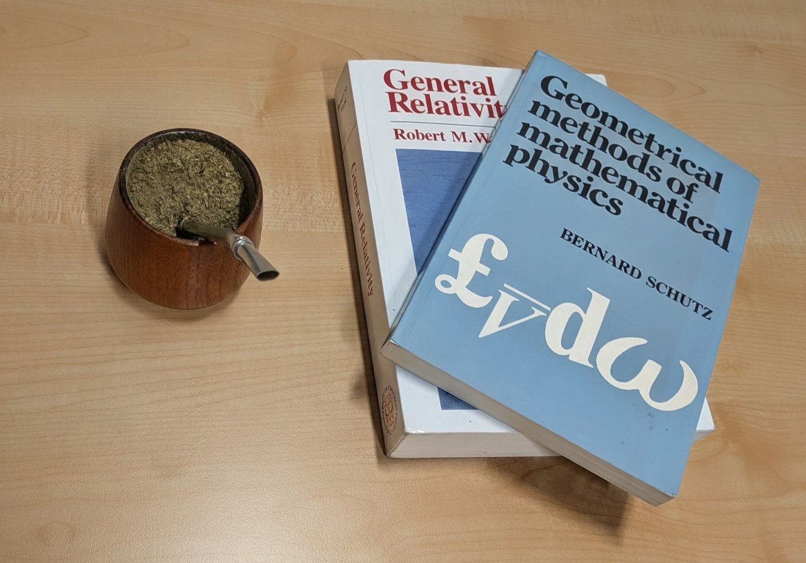

About Me
My name is Francisco Blanco, and I am a postdoctoral researcher at the Max Planck Institute for Gravitational Physics (Albert Einstein Institute) in Potsdam, Germany.
I am a theoretical physicist working on the relativistic two-body problem: the study of the motion of two compact objects, such as black holes and neutron stars, under the effect of their mutual gravitational attraction. I am particularly interested in developing analytical methods that reformulate the problem in interesting ways and provide deeper insight into the dynamics of these systems.
